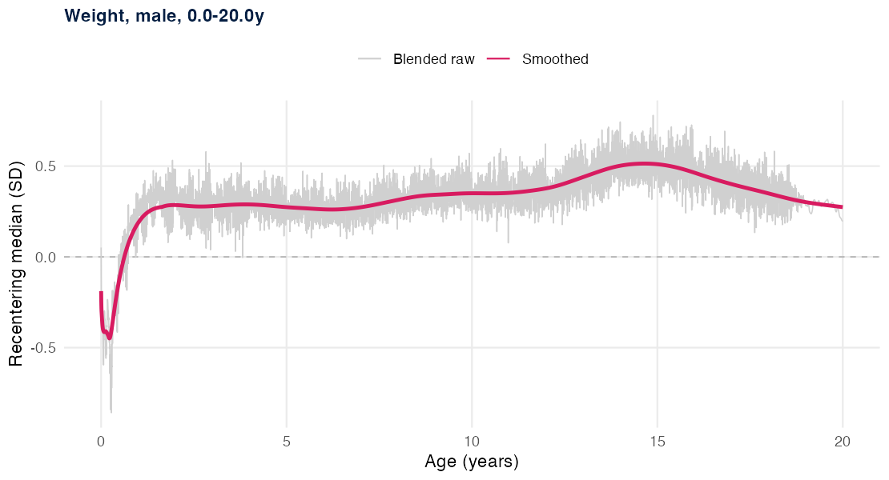
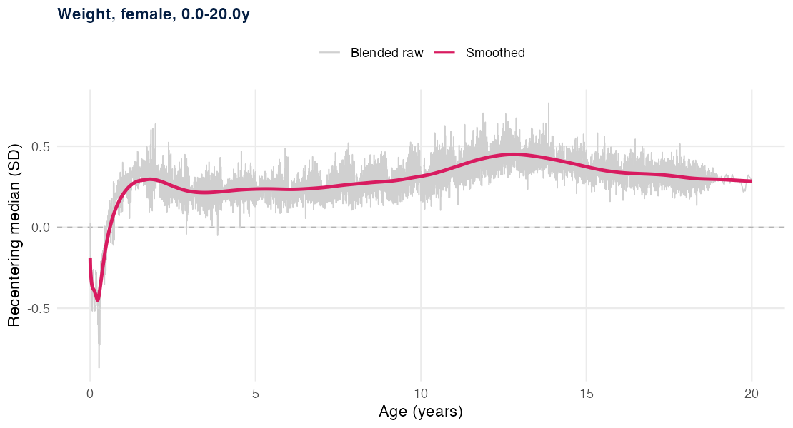
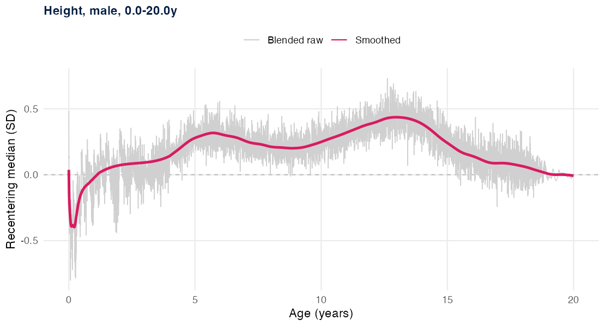
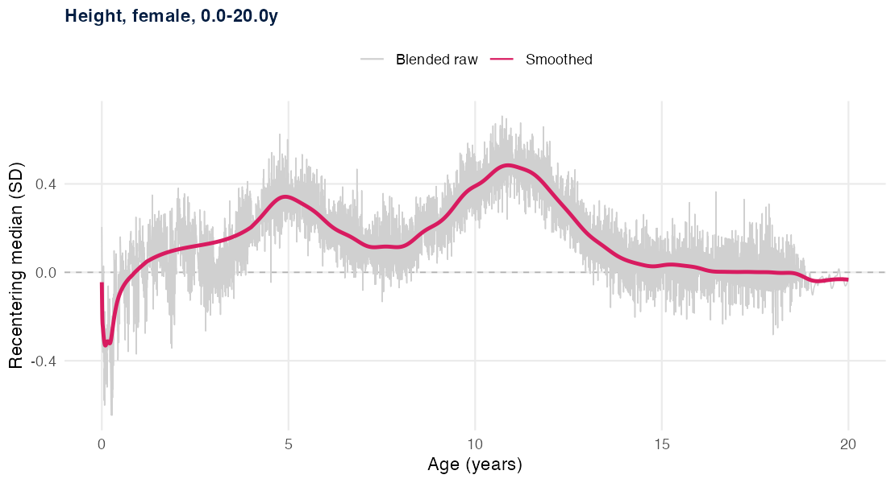
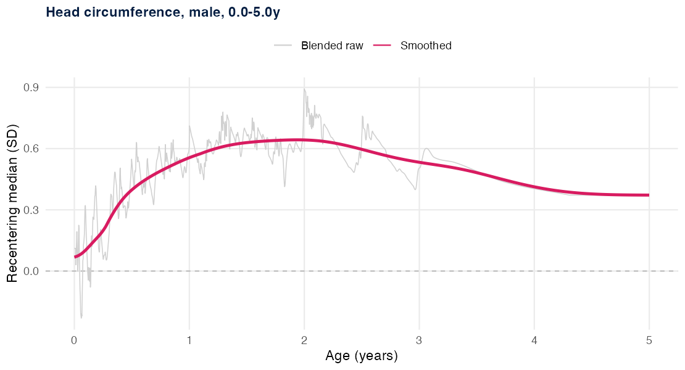
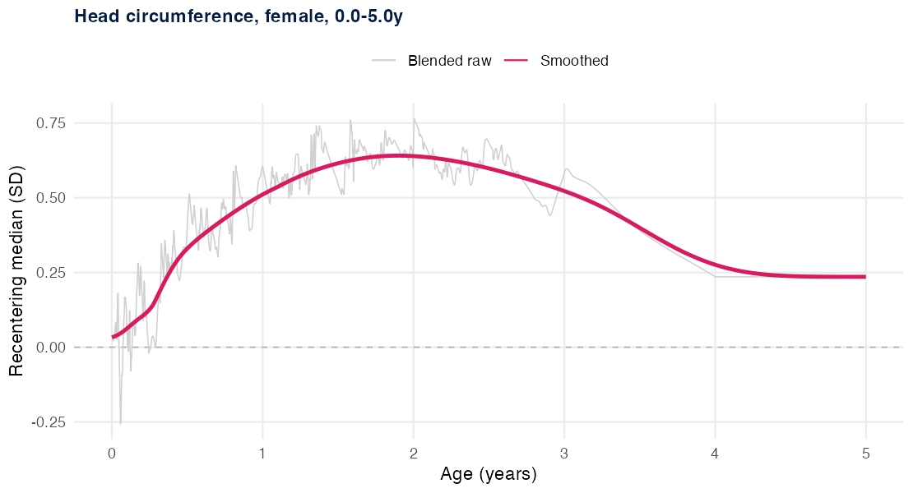

Deriving the recentering reference medians
2026-11-09
Source:vignettes/recentering.Rmd
recentering.RmdThe method for recentering was changed in version 3. See below for more on what recentering is and why it changed.
What are recentering medians and why does growthcleanr use them?
The growth of many populations (including specifically U.S. children) does not match either the WHO or CDC growth charts. (For example, the CDC growth charts are specifically designed not to reflect recent rises in obesity.) This can affect the accuracy of cleaning because expected changes in z-score can put a good measurement over a threshold that would result in exclusion. It can also keep an erroneous measurement from being excluded.
Therefore, in most (not all) comparisons the child algorithm makes,
growthcleanr evaluates measures using a recentered z-score. This is the
z-score calculated from the reference minus a recentering median. The
recentering median is a smoothed median z-score for that parameter,
ageday, and sex. So if the smoothed median for boys at 213 agedays is
0.23, a child with a reference z-score (sd.orig in the code) of 0.5 gets
a recentered z-score (tbc.sd - for “to be cleaned”) of 0.27. This is
described in more detail in vignette("algorithm-functions")
and vignette("child-algorithm").
Why was recentering changed in version 3?
In prior versions, recentering was based either on a user’s own data or on NHANES data. Using a user’s own data had some benefits but meant that a child’s data could be cleaned differently depending on the other data in a dataset. Using NHANES was reproducible, but NHANES lacks detailed data for early infancy, and the growth patterns commonly found in longitudinal clinical data often do not match the cross-sectional prospective data in NHANES.
How were the recentering medians in version 3 developed?
Developing recentering medians is challenging, and methods have evolved with different releases of growthcleanr. The current method is described below.
Data source
We used data from 4 sites in the American Academy of Pediatrics’ CER2 research network. We are grateful that they provided access to their data to help improve growthcleanr. The Children’s Hospital of Philadelphia is one of the sites in the CER2 network. We used identified data specifically from CHOP for head circumference data and ages 18 to 20 years, and to supplement the first few months of life.
Rationale for smoothing
Significant smoothing was required. In addition to daily variation (even from a large dataset), there was significant artifact from visit availability. In infants and younger children especially, measurements recorded around the ages of typical well child visits have higher z-scores, on average, than visits that take place at other times. This makes sense because children who are sick (chronically or acutely) are more likely to be seen between well child visits. This effect is rather large at some ages (approximately 0.2-0.3 z-scores). If not accounted for, it would introduce non-physiologic artifact into the curves. Another key issue that needs to be considered when smoothing is the length/height transition at two years of age, which will be discussed separately in a section below.
Smoothing approach
How much to smooth, and where to preserve more abrupt change, is a judgment. The primary developer used judgment informed by work with growth data from multiple centers and experience creating growth references. The guiding principle is that the curve should follow real, gradual shifts in the population’s position and should not encode two kinds of spurious structure: sampling artifacts and measurement artifacts. In a few places, discussed below, the right amount of smoothing is more abrupt rather than less, because the underlying change is truly rapid.
Details of data sources for identifying daily medians
Weight. We use the single-center birth weight and transition to the multi-center source over the first four months of age. We transition gradually because the multi-center daily medians in the first few months contain occasional narrow spikes to implausibly low values on sparse days, whereas the single-center medians do not; blending in more of the single-center source across that window dampens those spikes before any smoothing.
Height. Height uses the multi-center source.
Head circumference. Head circumference uses the single-center source. Medians for head circumference are calculated through 5 years of age.
The oldest ages. The file runs to 20 years. Because the multi-center source ends near 19 years, we use a weighted average to merge the single-center data into the multi-center data from 18 to 19 years, and use solely the single center data above that.
The smoothing approach
We smooth each assembled daily series in two stages, a robust de-spike followed by an age-adaptive weighted average. The two stages address two different problems: isolated spikes on sparse days, and the broader visit-driven oscillation.
The first stage removes narrow spikes. For each day of age we clamp the value to a robust local band and follow this with a short running median. The most extreme daily values are narrow: they sit far from their neighbors while the surrounding window matches. Clamping each day to a band defined by the local median and median absolute deviation removes these spikes without shifting the underlying level, because the median and median absolute deviation are themselves resistant to the very outliers being removed.
The second stage is an age-adaptive weighted average. The clearest way to describe the smoothing is by what it deliberately keeps sharp and what it deliberately removes.
Preserved: An early decline in weight
The decline in weight SD score over the first two to three months of life is real, and we keep it. The WHO standard does not fully capture real-world early weight loss and slower early weight gain, so relative to the reference the population’s weight SD score falls from birth to a nadir around two to three months of age and then rises. This pattern is present in the single-center data and is consistent with the multi-center data and patterns seen in other centers. We smooth the day-to-day noise around it but keep the overall shape: a smooth decline from birth to roughly three months, then a smooth rise. We keep the birth region relatively sharp so that the newborn decline remains visible rather than being flattened.
Preserved: An early decline in height
The decline in height SD score over the first weeks of life is likewise kept, in softened form. It is present in more than one source, so even though its exact size on any single day is uncertain, we retain the downward shape rather than removing it. We soften the earliest days, because recorded lengths at birth are unreliable and because this decline is present but less prominent in other datasets, but we do not flatten the decline away.
Removed: Visit availability oscillation
As described above, the oscillation between well-visit and off-visit ages is a sampling artifact, and the smoothing window through infancy is set wide enough to average across it rather than follow it.
Removed: The length-to-height transition near 2 years
The WHO and CDC growth charts assume that linear growth is measured as recumbent length before 2 years of age and as standing height at 2 years and older. In clinical settings, this transition is often not made at exactly this age. For the same child measured on the same day, recumbent length is typically 0.7 to 0.8 cm larger than standing height. As a result, if linear growth is measured as height before 2 years, the length-based z-score is artificially low; if it is measured as length at 2 years or older, the height-based z-score is artificially high. This produces a drop in the median SD score just before 2 years and a rise just after, and both are visible in the raw daily medians.
We smooth this transition out, because leaving it in the recentering medians would build a measurement error into the recentering itself. We replace the affected span with a monotone interpolation anchored on the smooth trend on each side, so the recentering median rises through this age without the transition-driven dip and rebound. Smoothing the transition supports accurate cleaning. growthcleanr offers an option to indicate whether each measurement is length or height. When that information is supplied, cleaning is more accurate, and a recentering curve that encoded the length-to-height transition would work against it: cleaning would be less accurate, not more, when length versus height is specified. Removing the transition from the recentering medians is therefore the choice consistent with using that information well.
Reproducibility and parameters
The de-spike clamps each day of age to the local median plus or minus 2.5 times the local median absolute deviation over an approximately 41-day window, followed by a 7-day running median. The age-adaptive average is a Gaussian-weighted window whose standard deviation, in days, is set separately for each parameter. For weight it starts near 6 days at birth, widens to about 24 days by 2 months, then grows in proportion to age (about 0.30 times the age in days) up to a cap of 180 days. For height it starts near 10 days, widens to about 26 days by 3 months, then grows the same way up to a cap of 90 days. For head circumference it is at least 30 days and grows the same way up to a cap of 120 days. The caps keep the window wide enough to remove day-to-day noise at older ages without blunting real gradual features such as the pubertal shift.
The early decline handling for weight and height pulls the smoothed curve halfway toward a lightly de-noised version of the raw series at birth, fading to the fully smoothed curve over a short window (about 4 to 5 days for weight and about 10 days for height). This keeps the early decline visible without tracking the noisy exact values on the first days of age. The length-to-height interpolation spans roughly 1.2 to 4 years and is monotone (PCHIP), anchored on the smoothed trend on each side.
The source blending rules, the de-spike, the age-adaptive window and its cap, the birth-region handling, and the length-to-height interpolation span are implemented in a saved build script, which records the exact tuning values and produces the full set of quality-control figures that motivated each choice, including close-in views of the joins: the birth region, the weight birth-to-multi-center transition, the length-to-height interpolation, and the oldest-age handoff. The final deliverable is a per-day recentering file covering birth to 20 years for weight and height and birth to 5 years for head circumference; the full-range curves are shown below.
The resulting curves
The smoothed recentering medians across the full age range are shown below for each parameter and sex, over the blended raw daily medians. Weight and height run to 20 years; head circumference is cleaned only through 5 years, so its recentering median stops there.


Weight recentering median, birth to 20 years (left: male; right: female).


Height recentering median, birth to 20 years (left: male; right: female).


Head circumference recentering median, birth to 5 years (left: male; right: female).
Limitations
The recentering medians describe the central position of large EHR populations relative to the growth reference, and no single smooth curve will match every dataset exactly. We do not attempt to reproduce the exact value at every site or age. The overall shape of the trajectory matters more than the precise value, and exact recentering for any particular dataset is an accepted and unavoidable limitation.
Custom recentering
If you have recentering medians of your own, you can supply them
instead of the built-in reference. Pass a data.table or data.frame with
columns param, sex, agedays, and
rcmedian.sd (sd.median is also accepted as the
median column’s name):
cleaned <- cleangrowth(df, sd.recenter = my_medians)The table must have exactly one median for each param,
sex (0 = male, 1 = female), and agedays (whole
days), and must include every param, sex, and
agedays of the child measurements to be cleaned. Head
circumference is cleaned only through age 5 years, and adult
measurements are not recentered, so neither needs medians. If a
combination is missing (or its median is NA), or appears
more than once, cleangrowth() stops before cleaning and
lists examples. growthcleanr works on a copy of the table, so your
object is not changed.
Because the built-in medians are based entirely on data from the U.S., supplying your own medians may be especially helpful for populations with different growth patterns. Building good recentering medians can take a large amount of data and careful, partially manual smoothing, as the sections above describe. Recentering from a small or noisy dataset can make cleaning worse rather than better, so we recommend supplying your own medians only when they have been prepared with care.
No recentering
You can turn recentering off with sd.recenter = "none",
although we do not recommend doing this routinely. The recentered
z-score is then the reference z-score with no median subtracted
(tbc.sd = sd.orig):
cleaned <- cleangrowth(df, sd.recenter = "none")